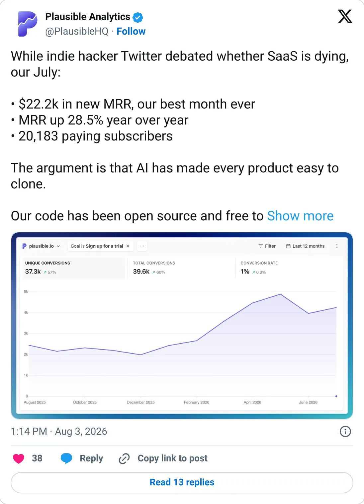

Real, don't clone
Plausible Analytics
Privacy analytics with a decade of exact numbers. Occupied.
~$3.1M ARR (Dec 2024) · MRR +28.5% YoY (Jul 2026)
Should you build this
Plausible is the privacy-friendly analytics product with the long exact trail: $42,624 MRR, $55,411, $71,311, $83,637, then a softer ~$3.1M ARR estimate for the end of 2024, and they were still publishing subscriber counts in 2026. Simple Analytics is the other real one, at $38k MRR on Stripe. Don't start a third cookie banner alternative.
Cited from the captured posts, shown below: the earliest captured post (Jul 24, 2024); the latest milestone (Aug 3, 2026) is the source for “July 2026: $22.2K new MRR, +28.5% YoY, 20,183 subs”.
Posts this is based on
Open on X

July 2026: $22.2K new MRR, +28.5% YoY, 20,183 subs
Open on X
What the product is
Open-source, privacy-friendly, cookie-free alternative to Google Analytics. Bootstrapped from Estonia.
Public trail
- $400324 days to first $400 MRR source
- $10K$10K MRR nine months later source
- $42.6K$500K ARR ($42,624 MRR) source
- $55.4K$55,411 MRR source
- $71.3K$71,311 MRR source
- $83.6K$1M ARR ($83,637 MRR), 7,000+ subs source
- $175K~$2.1M ARR (third-party) source
- $258.3K~$3.1M ARR (third-party) source
- •July 2026: $22.2K new MRR, +28.5% YoY, 20,183 subs source